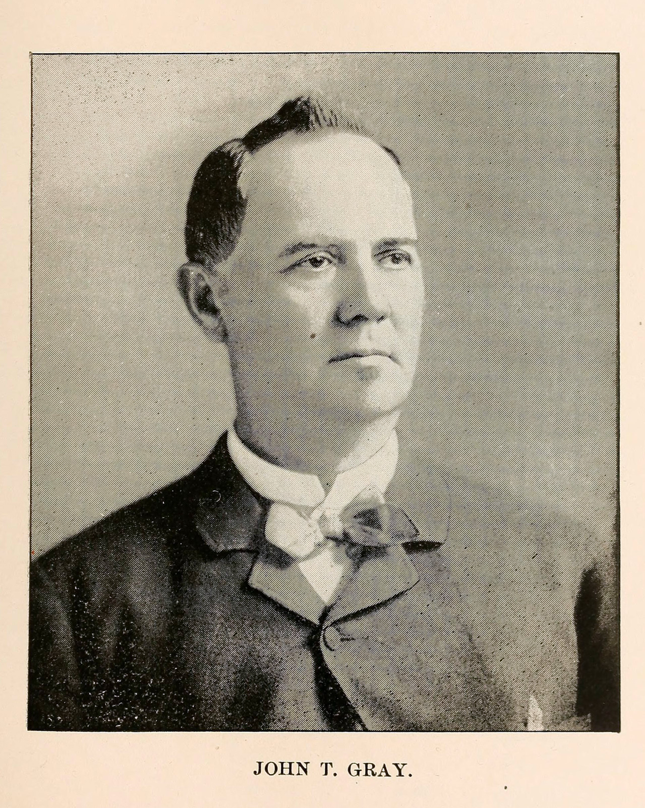
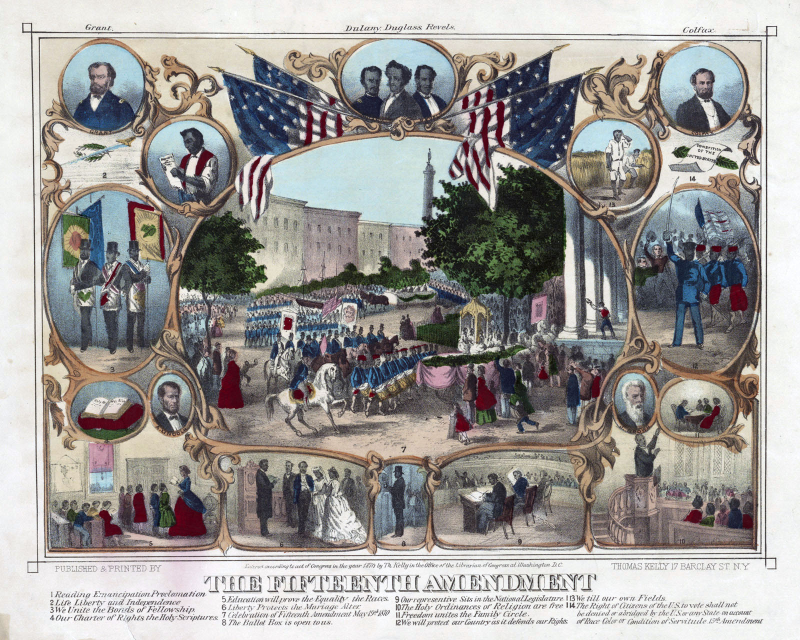

![]()
Yesterday, thousands of people assembled in downtown Baltimore to protest the death of Freddie Gray. Despite a largely peaceful assembly, media coverage of the protests has focused on the handful of vehicles and storefronts damaged during the day. This morning, I appreciated activist Deray McKesson’s reflections on troubling issues with the coverage of the protest and the false equivalency between property damage and violence. While researching the history of police violence in Baltimore, I came across an early example of the police response to a black public assembly that I’d like to juxtapose with yesterday’s events.

The account of this police response, published in 1883, describes how the Baltimore Police Marshal John T. Gray “took every precaution for the prevention of an outbreak” of violence during a celebratory parade and political rally that followed the adoption of the Fifteenth Amendment in 1870. It continues to share how black men in Baltimore organized “dozens of military companies,” armed with “old army muskets” and drilled on Baltimore’s streets. After the shooting young man by members of one of these regiments, Marshal John T. Gray attacks one of the companies (unclear if it was the same group implicated in the shooting), arrests their officers, and disarms the men.
It is hard to interpret this account from our contemporary perspective. I haven’t been able to fully corroborate this account in the Baltimore Sun, but if we accept this account as accurate it is important to note that the Baltimore police didn’t respond to the shooting by attempting arrest the individuals directly involved. Instead, the Baltimore Police Board “made an order forbidding public parades” and Police Marshal Gray targeted the most prominent company of black troops - the “crack” Lincoln Guard. By disarming and dismantling these organizations, the Baltimore police eliminated an important vehicle for black Baltimoreans to mobilize Republican voters and defend themselves against violence.
To be clear: I’m not arguing that the actions of the Baltimore police in 2015 are equivalent to the actions of the police in 1871. I’m not trying to suggest that the Lincoln Guard are the same as the protestors here today. However, the story contains important elements–elite fear of black public assembly, racist images of black political action, and the role of the police in protecting an ambiguous public interest–that suggest an important continuity between Baltimore in the 1870s and today.
On November 1, 1870, the Baltimore Sun, then strongly opposed to the Republican party and black suffrage, reported on a Democratic political rally where the images of black men armed with bayonets and black elected officials depicted as criminals were prominently displayed:
A grand demonstration of the democratic conservative party, comprising an immense and brilliant procession, with torches, banners and devices, and an overwhelming mass meeting in Monument Square, took place last night upon the call of the democratic executive committee of the city. […]
Thirteenth Ward–James Cosgove, chief marshal.–The display in this ward was good though in point of number not so large. A wagon, drawn by four horses, contained a monument, upon the front of which was a life-size portrait of Washington. […] There was a representation of a company of colored men pointing their bayonets at the place of holding the polls, with the inscription, “What free American has come to under radical rule.” There was also a picture of a man in the act of stealing spoons, with inscription as to type of the radical Congress, &c.
At the same rally, Thomas Swann, the immediate past Governor of Maryland and a member of the U.S. House of Representatives, shared his own comments on the threat of organized black voters:
[General Creswell] had come here to [Baltimore] to marshal his negro crowd of voters, and to attempt to overawe the democracy with threats of what the President would do with his soldiers.
Baltimore’s newly enfranchised black citizens, including many veterans of the U.S. Colored Troops, could clearly see this procession and assembly as a serious threat to their own hard-won rights. But the police, of course, did not shut down Democratic rallies or parades. And in January 1870 the Democratic party (and the Baltimore Sun) opposed the Enforcement Act of 1871 empowering President Ulysses S. Grant to suspend the writ of habeas corpus in trying to end the terrorism of the Ku Klux Klan (KKK).
This history can help us think about what we will fight for and what we won’t. Here is the account for your consideration:
As Marshal of Baltimore Mr. Gray achieved a national reputation by the reforms he instituted and by the skill with which lie handled his force on many critical occasions. The great Emancipation Jubilee of the negroes in 1870 was the first serious occasion upon which Marshal Gray’s skill as a policeman showed itself prominently. This was the celebration by the negroes of their emancipation. In Baltimore, as well as in all the other Southern cities, certain classes of the white population still harbored a bitter feeling against the negroes, intensified by the offensive manner in which many of the latter had conducted themselves since their emancipation. The law abiding citizens, therefore looked with trepidation upon the preparations of the colored folk for this jubilee, and Marshal Gray took every precaution for the prevention of an outbreak. The day came and one of the most enormous civic parades ever witnessed in the United States took place. Fully ninety per cent of all the negroes in Baltimore and the surrounding country took part, either in the parade itself or as applauding spectators. It is estimated that not less than 30,000 negroes were in line. The parade marched past a certain point from before noon till well into the night before the last platoon had gone by.
]
The populace of both races were apparently willing to fight and a general collision seemed imminent all day, but the police were everywhere, with their eyes on every man who seemed belligerently inclined. The moral influence of the force seemed to subdue the would-be rioters, and though a few unimportant brawls, took place the jubilee passed off without serious trouble anywhere in the city. Marshal Gray received flattering commendations from the newspapers and from citizens for the admirable manner in which the peace of the city was preserved during the critical period.
After the Emancipation Jubilee a military spirit seemed suddenly to seize the negro population of Baltimore. Dozens of military companies were formed, which drilled every evening in the streets much to the annoyance of quiet people. After the war an immense number of old-fashioned muskets were stored in the city by the United States Government. Of the old army muskets alone there were more than 12,000 stand. By some means these arms all fell into the hands of the negroes and they used them for their military companies. These organizations banded into regiments and numbered themselves the First, Second, Third, etc., Maryland Colored Regiments, although they were never admitted to the National Guard, nor recognized by the State military authorities. The South being at that time in a state of reconstruction the negroes were suffered to commit many offenses against the public peace which would never have been attempted or permitted on the part of the whites. Before long the negro regiments began the practice of taking full possession of every street they entered. They would march with fixed bayonets through the principal streets and clear everything before them from curb to curb. Wagons, carriages, and horse cars had to be turned back before them or else they were driven back under bayonet charge.
One evening in May 1871, the colored troops came down Baltimore street with fixed bayonets as usual, turning people and vehicles into side streets, when three young men who were talking together on the curb refused to move on and clear the way for the procession. A charge was made upon them and they were forced to flee around the nearest corner. As they went several of the negroes fired a volley at them and, one of the young men, a son of a well-known German citizen fell dead. He was shot through the heart. It turned out that he was a Republican in politics and had been a great friend of the negroes. They alleged that he threw a stone into the ranks of the procession but this was positively denied by every bystander. The funeral of the young German was the occasion of a large popular demonstration. Public indignation long since aroused by the offensiveness of the colored military organizations found voice in a general demand for their immediate suppression. As the negroes were in a certain sense under Federal protection, this was a difficult matter to accomplish.
The Police Board, however, made an order forbidding public parades through the streets by any military organization not connected with the National Guard or National Government. When this order was read in the meeting places of the colored companies it was received with hoots and jeers of derision. The night that the order was issued, learning that the negroes were about to parade as usual, Marshal Gray sent to the headquarters of the “Lincoln Guard,” the “crack” company of the city, and warned them not to parade. Captain Delanty was laughed at when he delivered the order, and his voice drowned by the howls of the negroes.
He then stood outside of the building with his policemen. The negroes formed in the street but at the first step they took after the captain gave the order to march the police rushed up and arrested a large number of them. The others ran back into the building. The police sent those they had captured to the station house. They then entered the building and after a short struggle captured the arms of the remainder. Their muskets gone and their leaders in jail, the militiamen became disheartened and broke up their company.
[tweet 592102034935013376 align=‘center’]
On learning the fate of their principal company, a number of other organizations surrendered their arms, and in the course of a few months practically all the muskets formerly used by the negro troops had been captured by the police. The arms were afterward sent to Fort McHenry, as they were the property of the United States.
Source: Folsom, De Francias. Our Police: A History of the Baltimore Force from the First Watchman to the Latest Appointee_. J. D. Ehlers & Company, 1888. (113-116)_
Reuse
Citation
@online{pousson2015,
author = {Pousson, Eli},
title = {Before {Freddie} {Gray:} “{The} {Police} {Board...} Made an
Order Forbidding Public Parades”},
date = {2015-04-26},
url = {https://elipousson.github.io/posts/2015-04-26-before-freddie-gray-the-police-board-made-an-order-forbidding-public-parades},
langid = {en}
}